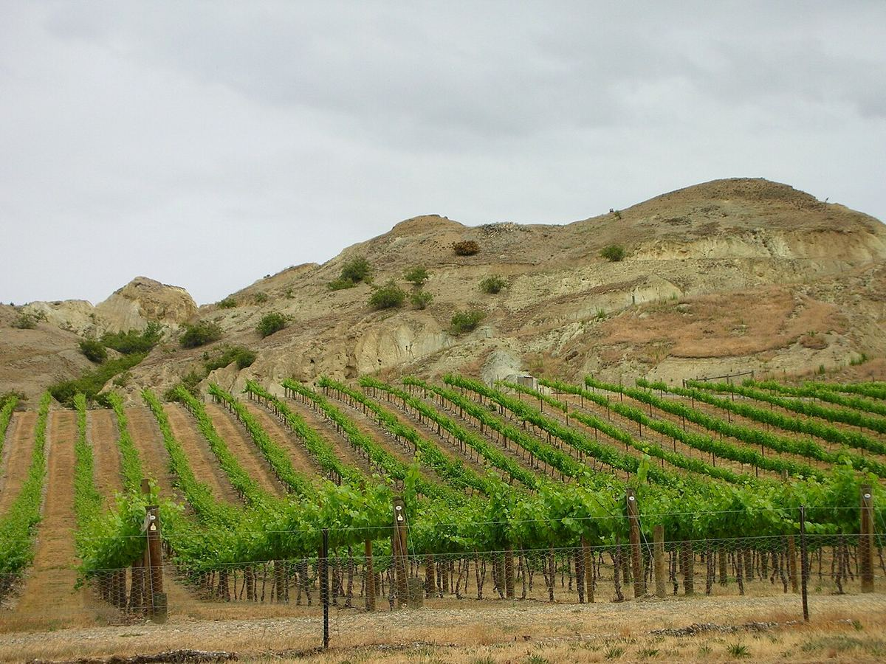

ROUGE
Accueil › Nouvelle-Zélande › Central Otago
Indication géographique (GI)Central Otago
Central Otago, dans l’intérieur montagneux du sud de l’île du Sud, est l’une des régions viticoles les plus méridionales du monde et la seule de Nouvelle-Zélande au climat continental. Elle est célèbre pour son pinot noir.

Histoire
Central Otago fut peuplée dans les années 1860 à la suite de la ruée vers l’or, et c’est alors que le Français Jean Désiré Féraud planta des vignes près de Clyde et élabora des vins qui furent présentés lors d’expositions. La viticulture ne connut cependant pas de continuité et, pendant un siècle, la région se consacra à l’exploitation minière, à l’élevage et aux vergers. À la fin des années 1970 et dans les années 1980, un petit groupe de pionniers replanta des vignes dans des lieux comme Gibbston, le lac Wanaka et Alexandra, alors même que de nombreux experts jugeaient la zone trop froide.
Les premiers vins commerciaux apparurent dans la seconde moitié des années 1980 et, au cours des années 1990, le pinot noir de la région commença à attirer l’attention. Depuis, le vignoble s’est beaucoup étendu et Central Otago est devenue l’un des grands noms du pinot noir du Nouveau Monde, ainsi qu’une destination touristique liée à Queenstown et à ses paysages de montagne.
Climat et sols
Située vers 45 degrés de latitude sud et entourée de chaînes de montagnes, la région a un climat continental, avec des étés courts, chauds et très lumineux, des automnes secs et des hivers froids. L’amplitude thermique entre le jour et la nuit est importante, et les gelées de printemps et d’automne représentent un risque constant. Les pluies sont rares, si bien que de nombreuses vignes doivent être irriguées. Les sols sont pauvres et issus surtout du schiste, avec du lœss déposé par le vent et des graviers d’origine glaciaire et fluviale. Parmi les secteurs les plus connus figurent Gibbston, le plus frais et le plus haut ; Bannockburn, l’un des plus chauds, au bord de la Kawarau ; le bassin de Cromwell, avec Lowburn et Pisa ; Bendigo ; Alexandra ; et Wanaka.
Styles
Le pinot noir occupe la majeure partie du vignoble et donne des rouges d’une couleur soutenue pour le cépage, aux fruits rouges et noirs très purs, aux notes d’herbes et d’épices, avec une bonne acidité et des tanins fins. Les différences entre secteurs sont sensibles, et de nombreux producteurs élaborent des vins d’une seule parcelle ou d’une seule vallée. Parmi les blancs se distinguent le riesling, dans des styles allant du sec au doux, le pinot gris et le chardonnay, tous d’une acidité marquée. On produit aussi des rosés et quelques effervescents. La région a largement adopté des pratiques de viticulture durable, et une part notable de ses vignes est cultivée en bio ou en biodynamie. De nombreuses caves accueillent des visiteurs, et l’œnotourisme est étroitement lié aux paysages de lacs et de montagnes qui entourent les vignes.
Vins · Central Otago
ROUGE